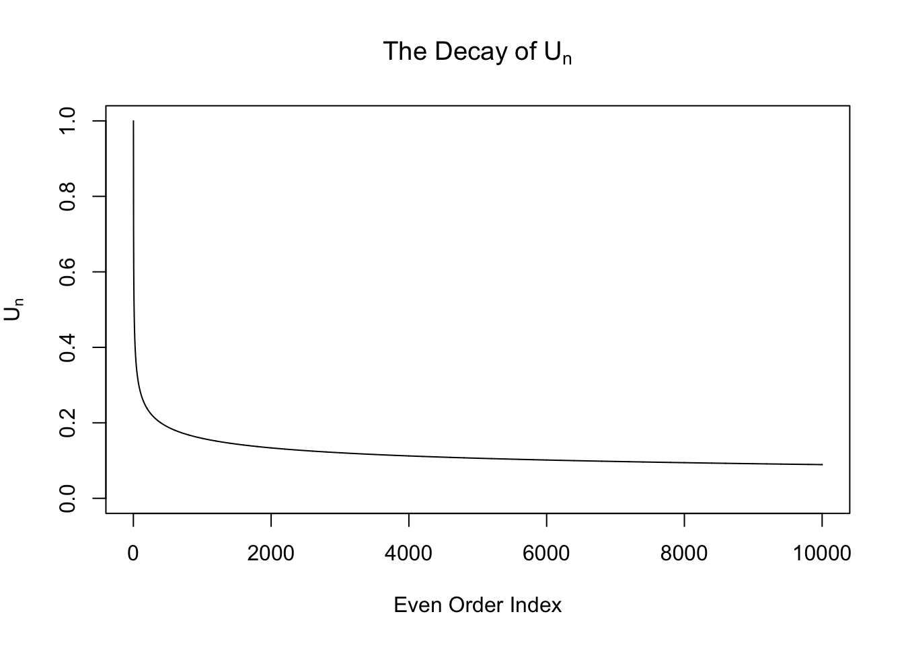
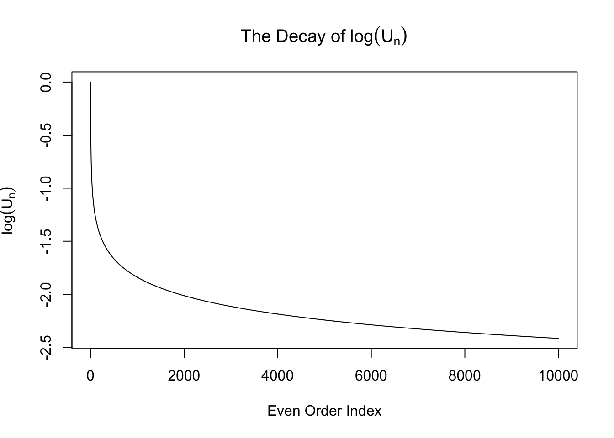
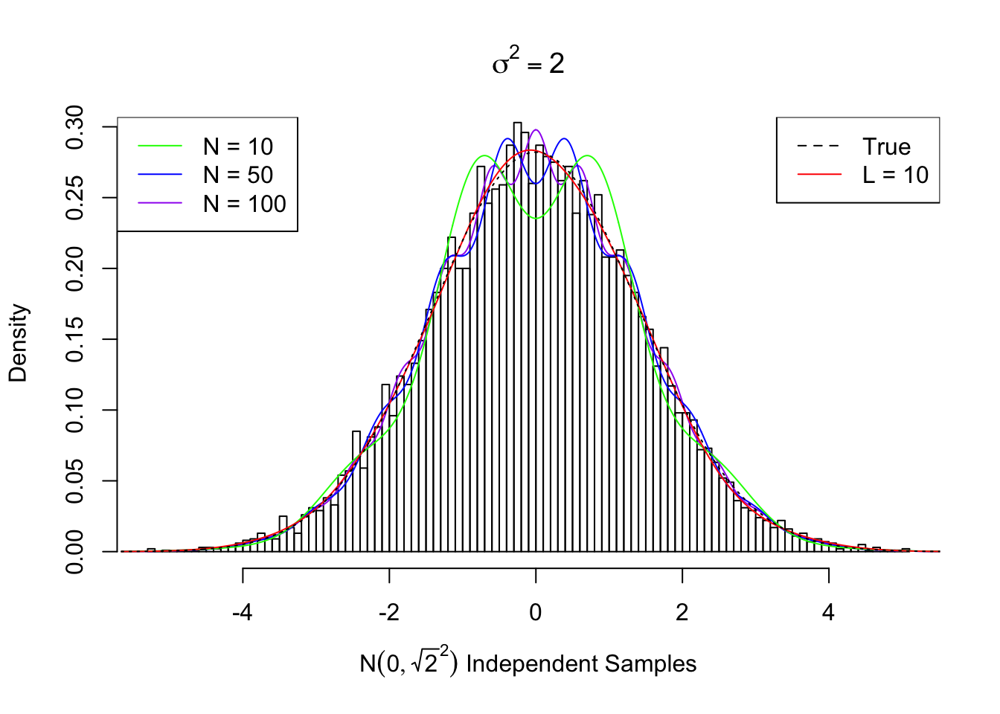
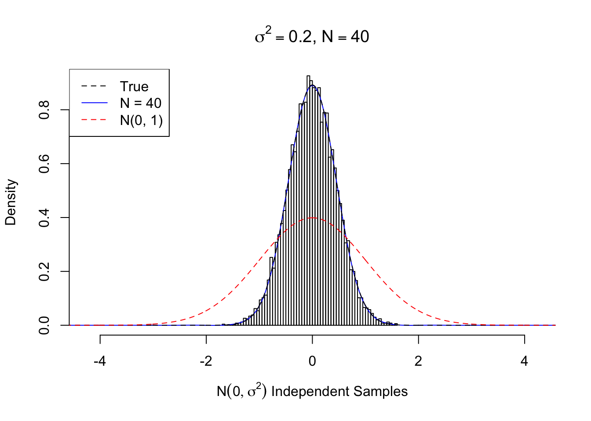
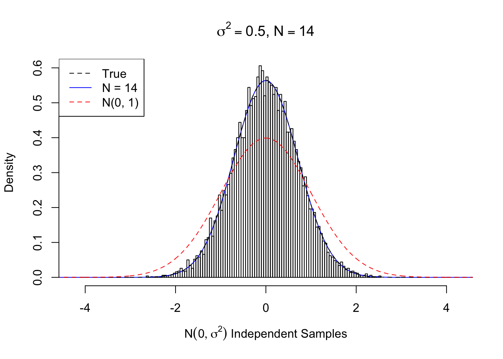
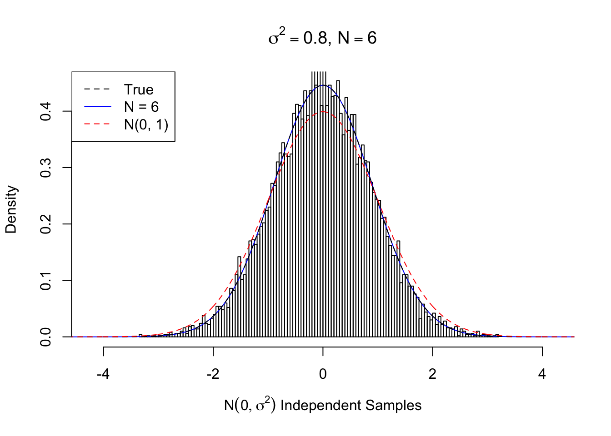
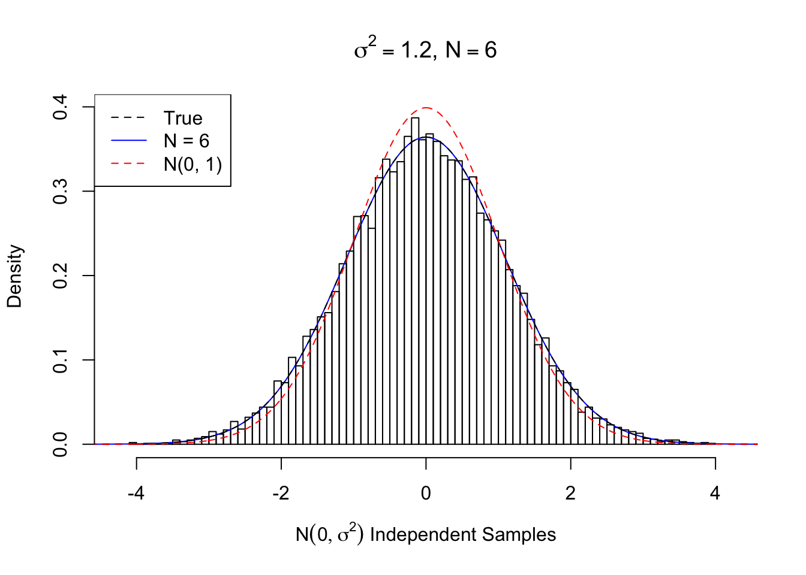
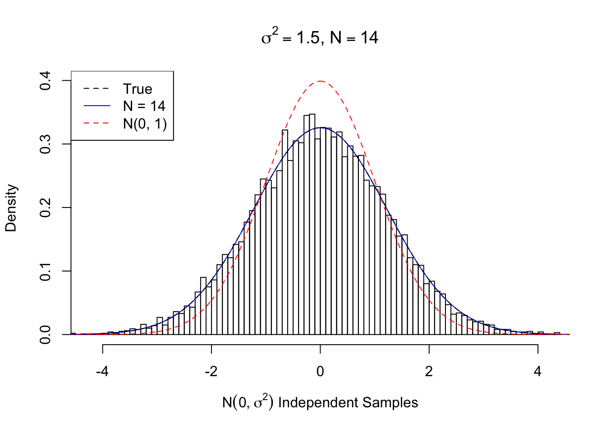
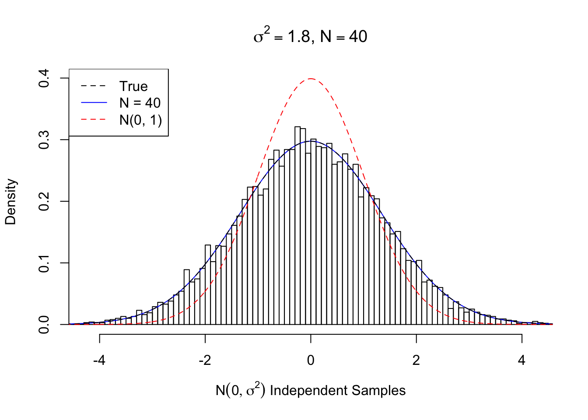

Last updated: 2018-05-12
workflowr checks: (Click a bullet for more information) ✔ R Markdown file: up-to-date
Great! Since the R Markdown file has been committed to the Git repository, you know the exact version of the code that produced these results.
✔ Environment: empty
Great job! The global environment was empty. Objects defined in the global environment can affect the analysis in your R Markdown file in unknown ways. For reproduciblity it’s best to always run the code in an empty environment.
✔ Seed:
set.seed(12345)
The command set.seed(12345) was run prior to running the code in the R Markdown file. Setting a seed ensures that any results that rely on randomness, e.g. subsampling or permutations, are reproducible.
✔ Session information: recorded
Great job! Recording the operating system, R version, and package versions is critical for reproducibility.
✔ Repository version: ddf9062
wflow_publish or wflow_git_commit). workflowr only checks the R Markdown file, but you know if there are other scripts or data files that it depends on. Below is the status of the Git repository when the results were generated:
Ignored files:
Ignored: .DS_Store
Ignored: .Rhistory
Ignored: .Rproj.user/
Ignored: analysis/.DS_Store
Ignored: analysis/BH_robustness_cache/
Ignored: analysis/FDR_Null_cache/
Ignored: analysis/FDR_null_betahat_cache/
Ignored: analysis/Rmosek_cache/
Ignored: analysis/StepDown_cache/
Ignored: analysis/alternative2_cache/
Ignored: analysis/alternative_cache/
Ignored: analysis/ash_gd_cache/
Ignored: analysis/average_cor_gtex_2_cache/
Ignored: analysis/average_cor_gtex_cache/
Ignored: analysis/brca_cache/
Ignored: analysis/cash_deconv_cache/
Ignored: analysis/cash_fdr_1_cache/
Ignored: analysis/cash_fdr_2_cache/
Ignored: analysis/cash_fdr_3_cache/
Ignored: analysis/cash_fdr_4_cache/
Ignored: analysis/cash_fdr_5_cache/
Ignored: analysis/cash_fdr_6_cache/
Ignored: analysis/cash_plots_cache/
Ignored: analysis/cash_sim_1_cache/
Ignored: analysis/cash_sim_2_cache/
Ignored: analysis/cash_sim_3_cache/
Ignored: analysis/cash_sim_4_cache/
Ignored: analysis/cash_sim_5_cache/
Ignored: analysis/cash_sim_6_cache/
Ignored: analysis/cash_sim_7_cache/
Ignored: analysis/correlated_z_2_cache/
Ignored: analysis/correlated_z_3_cache/
Ignored: analysis/correlated_z_cache/
Ignored: analysis/create_null_cache/
Ignored: analysis/cutoff_null_cache/
Ignored: analysis/design_matrix_2_cache/
Ignored: analysis/design_matrix_cache/
Ignored: analysis/diagnostic_ash_cache/
Ignored: analysis/diagnostic_correlated_z_2_cache/
Ignored: analysis/diagnostic_correlated_z_3_cache/
Ignored: analysis/diagnostic_correlated_z_cache/
Ignored: analysis/diagnostic_plot_2_cache/
Ignored: analysis/diagnostic_plot_cache/
Ignored: analysis/efron_leukemia_cache/
Ignored: analysis/fitting_normal_cache/
Ignored: analysis/gaussian_derivatives_2_cache/
Ignored: analysis/gaussian_derivatives_3_cache/
Ignored: analysis/gaussian_derivatives_4_cache/
Ignored: analysis/gaussian_derivatives_5_cache/
Ignored: analysis/gaussian_derivatives_cache/
Ignored: analysis/gd-ash_cache/
Ignored: analysis/gd_delta_cache/
Ignored: analysis/gd_lik_2_cache/
Ignored: analysis/gd_lik_cache/
Ignored: analysis/gd_w_cache/
Ignored: analysis/knockoff_10_cache/
Ignored: analysis/knockoff_2_cache/
Ignored: analysis/knockoff_3_cache/
Ignored: analysis/knockoff_4_cache/
Ignored: analysis/knockoff_5_cache/
Ignored: analysis/knockoff_6_cache/
Ignored: analysis/knockoff_7_cache/
Ignored: analysis/knockoff_8_cache/
Ignored: analysis/knockoff_9_cache/
Ignored: analysis/knockoff_cache/
Ignored: analysis/knockoff_var_cache/
Ignored: analysis/marginal_z_alternative_cache/
Ignored: analysis/marginal_z_cache/
Ignored: analysis/mosek_reg_2_cache/
Ignored: analysis/mosek_reg_4_cache/
Ignored: analysis/mosek_reg_5_cache/
Ignored: analysis/mosek_reg_6_cache/
Ignored: analysis/mosek_reg_cache/
Ignored: analysis/pihat0_null_cache/
Ignored: analysis/plot_diagnostic_cache/
Ignored: analysis/poster_obayes17_cache/
Ignored: analysis/real_data_simulation_2_cache/
Ignored: analysis/real_data_simulation_3_cache/
Ignored: analysis/real_data_simulation_4_cache/
Ignored: analysis/real_data_simulation_5_cache/
Ignored: analysis/real_data_simulation_cache/
Ignored: analysis/rmosek_primal_dual_2_cache/
Ignored: analysis/rmosek_primal_dual_cache/
Ignored: analysis/seqgendiff_cache/
Ignored: analysis/simulated_correlated_null_2_cache/
Ignored: analysis/simulated_correlated_null_3_cache/
Ignored: analysis/simulated_correlated_null_cache/
Ignored: analysis/simulation_real_se_2_cache/
Ignored: analysis/simulation_real_se_cache/
Ignored: analysis/smemo_2_cache/
Ignored: data/LSI/
Ignored: docs/.DS_Store
Ignored: docs/figure/.DS_Store
Ignored: output/fig/
Unstaged changes:
Deleted: analysis/cash_plots_fdp.Rmd
| File | Version | Author | Date | Message |
|---|---|---|---|---|
| rmd | cc0ab83 | Lei Sun | 2018-05-11 | update |
| html | 0f36d99 | LSun | 2017-12-21 | Build site. |
| html | 853a484 | LSun | 2017-11-07 | Build site. |
| html | fa2c24e | LSun | 2017-11-06 | transfer |
| html | 87193ba | LSun | 2017-05-17 | fitting normal |
| rmd | 055f9f0 | LSun | 2017-05-17 | websites |
| html | a530025 | LSun | 2017-05-17 | mean 0 normal |
| rmd | 4dab9a4 | LSun | 2017-05-17 | mean 0 normal |
We know the empirical distribution of a number of correlated null \(N\left(0, 1\right)\) \(z\) scores can be approximated by Gaussian derivatives at least theoretically. Now we want to know if the \(N\left(0, \sigma^2\right)\) density can also be approximated by Gaussian derivatives. The question is important because it is related to the identifiability between the correlated null and true signals using the tool of Gaussian derivatives.
The same question was investigated for small \(\sigma^2\) and large \(\sigma^2\). But these investigations was empirical, in the sense that we are fitting the Gaussian derivatives to a large number of independent samples simulated from \(N\left(0, \sigma^2\right)\). Now we are doing that theoretically.
If a probability density function (pdf) \(f\left(x\right)\) can be approximated by normalized Gaussian derivatives, we should have
\[ f\left(x\right) = w_0\varphi\left(x\right) + w_1\varphi^{(1)}\left(x\right) + w_2\frac{1}{\sqrt{2!}}\varphi^{(2)}\left(x\right) + \cdots + w_n\frac{1}{\sqrt{n!}}\varphi^{(n)}\left(x\right) + \cdots \ . \] Using the fact that Hermite polynomials are orthonormal with respect to the Gaussian kernel and normalizing constants, we have
\[ \int_{\mathbb{R}} \frac{1}{\sqrt{m!}} h_m\left(x\right) \frac{1}{\sqrt{n!}}\varphi^{(n)}\left(x\right)dx = \left(-1\right)^n\delta_{mn} \ . \] Therefore, when using Gaussian derivatives to decompose a pdf \(f\), the coefficients \(w_n\) can be obtained by
\[ w_n = \left(-1\right)^n \int \frac{1}{\sqrt{n!}} h_n(x) f(x) dx = \frac{\left(-1\right)^n}{\sqrt{n!}} E_f\left[h_n\left(x\right)\right] \ . \] Since \(h_n\) is a degree \(n\) polynomials, \(E_f\left[h_n\left(x\right)\right]\) is essentially a linear combination of relevant moments up to order \(n\), denoted as \(E\left[x^i\right]\). For example, here are the first several \(E_f\left[h_n\left(x\right)\right]\).
\[ \begin{array}{rclcl} E_f\left[h_0\left(x\right)\right] &=& E_f\left[1\right] &=& 1 \\ E_f\left[h_1\left(x\right)\right] &=& E_f\left[x\right] &=& E\left[x\right] \\ E_f\left[h_2\left(x\right)\right] &=& E_f\left[x^2 - 1\right] &=& E\left[x^2\right] - 1\\ E_f\left[h_3\left(x\right)\right] &=& E_f\left[x^3 - 3x\right] &=& E\left[x^3\right] - 3 E\left[x\right]\\ E_f\left[h_4\left(x\right)\right] &=& E_f\left[x^4 - 6x^2 + 3\right] &=& E\left[x^4\right] - 6 E\left[x^2\right] + 3\\ E_f\left[h_5\left(x\right)\right] &=& E_f\left[x^5 - 10x^3 + 15x\right] &=& E\left[x^5\right] - 10 E\left[x^3\right] + 15 E\left[x\right]\\ E_f\left[h_6\left(x\right)\right] &=& E_f\left[x^6 - 15x^4 + 45x^2 - 15\right] &=& E\left[x^6\right] - 15 E\left[x^4\right] + 45E\left[x^2\right] - 15\\ \end{array} \] Some call these “Hermite moments.”
When \(f = N\left(0, \sigma^2\right)\), we can write all Hermite moments out analytically. After algebra, it turns out they can be written as
\[ E_f\left[h_n\left(x\right)\right] = \begin{cases} 0 & n \text{ is odd}\\ \left(n - 1\right)!! \left(\sigma^2 - 1\right)^{n / 2} & n \text{ is even} \end{cases} \ , \] where \(\left(n - 1\right)!!\) is the double factorial.
Hence, if we want to express the pdf of \(N\left(0, \sigma^2\right)\) in terms of normalized Gaussian derivatives, the coefficient
\[ w_n = \begin{cases} 0 & n \text{ is odd}\\ \frac{\left(n - 1\right)!!}{\sqrt{n!}}\left(\sigma^2 - 1\right)^{n / 2} =\sqrt{\frac{\left(n - 1\right)!!}{n!!}}\left(\sigma^2 - 1\right)^{n / 2} & n \text{ is even} \end{cases} \ . \] From now on we will only pay attention to the even-order coefficients \(w_n = \sqrt{\frac{\left(n - 1\right)!!}{n!!}}\left(\sigma^2 - 1\right)^{n / 2} := U_n\left(\sigma^2 - 1\right)^{n / 2}\), where the sequence \(U_n := \sqrt{\frac{\left(n - 1\right)!!}{n!!}}\). Note that this sequence \(U_n\) is interesting. It can be proved that it’s going to zero as \(n\to\infty\). Actually it can be written in another way
\[ \int_{0}^{\frac\pi2} \sin^nx dx = \int_{0}^{\frac\pi2} \cos^nx dx = \frac\pi2U_n^2 \ . \] However, this sequence decays slowly. In particular, it doesn’t decay exponentially, as seen in the following plots.

| Version | Author | Date |
|---|---|---|
| 0f36d99 | LSun | 2017-12-21 |
| a530025 | LSun | 2017-05-17 |

| Version | Author | Date |
|---|---|---|
| 0f36d99 | LSun | 2017-12-21 |
| a530025 | LSun | 2017-05-17 |
Therefore, when \(\sigma^2 > 2\), \(w_n\) is exploding! It means theoretially we cannot actually fit \(N\left(0, \sigma^2\right)\) with Gaussian derivatives when \(\sigma^2 > 2\).
It has multiple implications. First, it shows why people usually say Gaussian derivatives can only fit a density that’s close enough to Gaussian, especially, a density whose variance is too “inflated” compared with the standard normal. Therefore, the fact that in many case, the correlated null can be satisfactorily fitted by Gaussian derivatives tells us the inflation caused by correlation is indeed peculiar.
On the other hand, when \(0 < \sigma^2 < 2\), that is, \(\left|\sigma^2 - 1\right| < 1\), \(w_n\) decays exponentially. It means that we are able to satisfactorily fit \(N\left(0, \sigma^2\right)\) with a limited number of Gaussian derivatives such that
\[ f_N\left(x\right) = \varphi\left(x\right) + \sum\limits_{n = 1}^N w_n\frac{1}{\sqrt{n!}}\varphi^{(n)}\left(x\right) \approx N\left(0, \sigma^2\right) = \frac{1}{\sigma}\varphi\left(\frac{x}{\sigma}\right) \ . \]
It also means that when the correlated null looks like \(N\left(0, \sigma^2\right)\) with \(\sigma^2\in\left(1, 2\right]\) (small inflation) or \(\sigma^2\in\left(0, 1\right)\) (deflation), it’s hard to identify whether the inflation or deflation is caused by correlation or true effects.
That’s why in previous empirical investigations, we found that we could fit \(N\left(0, \sqrt{2}^2\right)\) relatively well, but could not fit when \(\sigma^2 > 2\).
Actually, \(N\left(0, \sqrt{2}^2\right)\) is a singularly interesting case. This case corresponds to when we have \(N\left(0, 1\right)\) signal and \(N\left(0, 1\right)\) independent noise, hence \(SNR = 0\). Theoretically the density curve can be fitted when the odd-order coefficients are \(0\) and the even-order ones are \(U_n = \sqrt{\frac{\left(n - 1\right)!!}{n!!}}\).
However, since \(U_n\) is not decaying fast enough, the re-constructed curve using a limited number of Gaussian derivatives doesn’t look good. Meanwhile, if we truly have many random samples from \(N\left(0, \sqrt{2}^2\right)\), we can fit the data using Gaussian derivatives, and the estimated coefficients \(\hat w\) usually give a better fit, as seen previously.
Here we plot the fitted curve using first \(N = 10, 50, 100\) orders of Gaussian derivatives, compared with the true \(N\left(0, \sqrt{2}^2\right)\) density and the curve estimated from random samples using \(L = 10\) Gaussian derivatives.
Estimated Normalized w: 0 ~ 1 ; 1 ~ -0.0126 ; 2 ~ 0.72013 ; 3 ~ -0.01709 ; 4 ~ 0.6782 ; 5 ~ 0.01241 ; 6 ~ 0.62481 ; 7 ~ 0.03822 ; 8 ~ 0.4004 ; 9 ~ 0.00207 ; 10 ~ 0.11385 ; Theoretical Normalized w: 0 ~ 1 ; 1 ~ 0 ; 2 ~ 0.70711 ; 3 ~ 0 ; 4 ~ 0.61237 ; 5 ~ 0 ; 6 ~ 0.55902 ; 7 ~ 0 ; 8 ~ 0.52291 ; 9 ~ 0 ; 10 ~ 0.49608 ; ...
Normalized w: 0 ~ 1 ; 1 ~ 0 ; 2 ~ -0.56569 ; 3 ~ 0 ; 4 ~ 0.39192 ; 5 ~ 0 ; 6 ~ -0.28622 ; 7 ~ 0 ; 8 ~ 0.21418 ; 9 ~ 0 ; 10 ~ -0.16255 ; 11 ~ 0 ; 12 ~ 0.12451 ; 13 ~ 0 ; 14 ~ -0.09598 ; 15 ~ 0 ; 16 ~ 0.07435 ; 17 ~ 0 ; 18 ~ -0.0578 ; 19 ~ 0 ; 20 ~ 0.04507 ; 21 ~ 0 ; 22 ~ -0.03523 ; 23 ~ 0 ; 24 ~ 0.02759 ; 25 ~ 0 ; 26 ~ -0.02164 ; 27 ~ 0 ; 28 ~ 0.017 ; 29 ~ 0 ; 30 ~ -0.01337 ; 31 ~ 0 ; 32 ~ 0.01053 ; 33 ~ 0 ; 34 ~ -0.0083 ; 35 ~ 0 ; 36 ~ 0.00655 ; 37 ~ 0 ; 38 ~ -0.00517 ; 39 ~ 0 ; 40 ~ 0.00408 ; 
Normalized w: 0 ~ 1 ; 1 ~ 0 ; 2 ~ -0.35355 ; 3 ~ 0 ; 4 ~ 0.15309 ; 5 ~ 0 ; 6 ~ -0.06988 ; 7 ~ 0 ; 8 ~ 0.03268 ; 9 ~ 0 ; 10 ~ -0.0155 ; 11 ~ 0 ; 12 ~ 0.00742 ; 13 ~ 0 ; 14 ~ -0.00358 ; 
Normalized w: 0 ~ 1 ; 1 ~ 0 ; 2 ~ -0.14142 ; 3 ~ 0 ; 4 ~ 0.02449 ; 5 ~ 0 ; 6 ~ -0.00447 ; 
Normalized w: 0 ~ 1 ; 1 ~ 0 ; 2 ~ 0.14142 ; 3 ~ 0 ; 4 ~ 0.02449 ; 5 ~ 0 ; 6 ~ 0.00447 ; 
Normalized w: 0 ~ 1 ; 1 ~ 0 ; 2 ~ 0.35355 ; 3 ~ 0 ; 4 ~ 0.15309 ; 5 ~ 0 ; 6 ~ 0.06988 ; 7 ~ 0 ; 8 ~ 0.03268 ; 9 ~ 0 ; 10 ~ 0.0155 ; 11 ~ 0 ; 12 ~ 0.00742 ; 13 ~ 0 ; 14 ~ 0.00358 ; 
Normalized w: 0 ~ 1 ; 1 ~ 0 ; 2 ~ 0.56569 ; 3 ~ 0 ; 4 ~ 0.39192 ; 5 ~ 0 ; 6 ~ 0.28622 ; 7 ~ 0 ; 8 ~ 0.21418 ; 9 ~ 0 ; 10 ~ 0.16255 ; 11 ~ 0 ; 12 ~ 0.12451 ; 13 ~ 0 ; 14 ~ 0.09598 ; 15 ~ 0 ; 16 ~ 0.07435 ; 17 ~ 0 ; 18 ~ 0.0578 ; 19 ~ 0 ; 20 ~ 0.04507 ; 21 ~ 0 ; 22 ~ 0.03523 ; 23 ~ 0 ; 24 ~ 0.02759 ; 25 ~ 0 ; 26 ~ 0.02164 ; 27 ~ 0 ; 28 ~ 0.017 ; 29 ~ 0 ; 30 ~ 0.01337 ; 31 ~ 0 ; 32 ~ 0.01053 ; 33 ~ 0 ; 34 ~ 0.0083 ; 35 ~ 0 ; 36 ~ 0.00655 ; 37 ~ 0 ; 38 ~ 0.00517 ; 39 ~ 0 ; 40 ~ 0.00408 ; 
When \(\sigma^2 = 0\), \(f = N\left(0, 0\right) = \delta_0\). In this case,
\[ w_n = \begin{cases} 0 & n \text{ is odd}\\ \sqrt{\frac{\left(n - 1\right)!!}{n!!}}\left(-1\right)^{n / 2} & n \text{ is even} \end{cases} \] is equivalent to what we’ve obtained previously
\[ w_n = \frac{1}{\sqrt{n!}}h_n\left(0\right) \ . \] The performance can be seen here.
sessionInfo()R version 3.4.3 (2017-11-30)
Platform: x86_64-apple-darwin15.6.0 (64-bit)
Running under: macOS High Sierra 10.13.4
Matrix products: default
BLAS: /Library/Frameworks/R.framework/Versions/3.4/Resources/lib/libRblas.0.dylib
LAPACK: /Library/Frameworks/R.framework/Versions/3.4/Resources/lib/libRlapack.dylib
locale:
[1] en_US.UTF-8/en_US.UTF-8/en_US.UTF-8/C/en_US.UTF-8/en_US.UTF-8
attached base packages:
[1] stats graphics grDevices utils datasets methods base
other attached packages:
[1] Rmosek_8.0.69 CVXR_0.95 REBayes_1.2 Matrix_1.2-12
[5] SQUAREM_2017.10-1 EQL_1.0-0 ttutils_1.0-1 PolynomF_1.0-1
loaded via a namespace (and not attached):
[1] Rcpp_0.12.16 knitr_1.20 whisker_0.3-2
[4] magrittr_1.5 workflowr_1.0.1 bit_1.1-12
[7] lattice_0.20-35 R6_2.2.2 stringr_1.3.0
[10] tools_3.4.3 grid_3.4.3 R.oo_1.21.0
[13] git2r_0.21.0 scs_1.1-1 htmltools_0.3.6
[16] bit64_0.9-7 yaml_2.1.18 rprojroot_1.3-2
[19] digest_0.6.15 gmp_0.5-13.1 ECOSolveR_0.4
[22] R.utils_2.6.0 evaluate_0.10.1 rmarkdown_1.9
[25] stringi_1.1.6 Rmpfr_0.6-1 compiler_3.4.3
[28] backports_1.1.2 R.methodsS3_1.7.1
This reproducible R Markdown analysis was created with workflowr 1.0.1